DistServe：面向 Goodput 优化的大语言模型 Prefill-Decoding 解耦服务
中文全文翻译
摘要
DistServe 通过解耦 prefill 与 decoding 来提升 LLM 服务性能。共置式系统既会产生阶段间干扰，也会耦合两个阶段的资源配置与并行方案。DistServe 将两阶段分配到不同 GPU，依据应用的 TTFT 与 TPOT 目标分别优化资源和并行策略，并按集群带宽放置实例以降低 KV 传输开销。评估显示，它可在满足延迟约束的前提下服务最多 7.4 倍请求，或提供 12.6 倍更严格的 SLO。
关键词：LLM serving；prefill-decoding disaggregation；TTFT；TPOT；goodput；资源规划
1 简介
大语言模型（LLM），如GPT-4、Bard和LLaMA，代表了生成式人工智能的一次突破性转变。它们开始重塑现有的互联网服务，从搜索引擎到个人助理，并支持诸如通用聊天机器人和编程助手等根本性新应用。然而，这些进步也带来了重大挑战：处理端到端LLM查询的速度可能远低于标准搜索查询。为了满足各种应用严格的延迟要求，服务提供商需要过度配置计算资源，尤其是许多GPU，导致成本效率下降。因此，在遵守高 SLO达成 （即满足SLO的请求比例）的同时，优化每次LLM查询的成本，正变得对所有LLM服务都变得越来越重要。
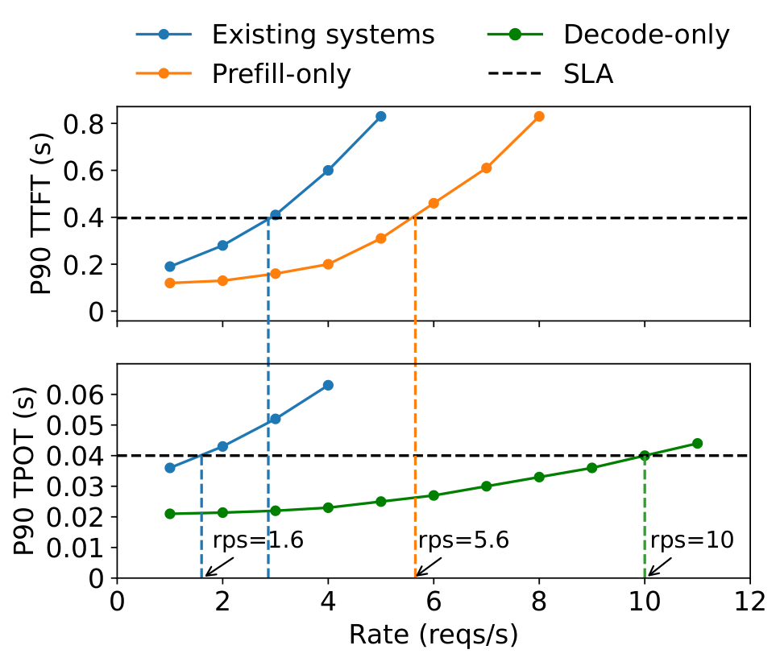
LLM服务对用户查询的响应分为两个阶段。 prefill阶段 处理用户的prompt，由一系列token组成，一步生成响应的第一个令 牌。随后， decode 阶段 会按顺序生成多个 步骤的后续符号;每个解码步骤都会根据前一步生成的token生成一个新token，直到达到一个终止token。这一双阶段过程将LLM服务与传统服务区分开来——LLM服务的延迟通过两个关键指标唯一衡量： 到第一个token 的时间（TTFT），即prefill阶段的持续时间，以及 每输出 token 时间 （TPOT），代表每个请求生成token的平均时间（除第一个token外）1.不同应用对每个指标的要求各不相同。例如，实时聊天机器人优先考虑低TTFT以保证响应速度，而TPOT仅在超过人类阅读速度（即250字/分钟）时才重要。相反，文档摘要强调低TPOT以加快摘要生成速度。
因此，鉴于应用的TTFT和TPOT要求，一个有效的LLM服务系统应当平衡这些需求，最大化 每个GPU的goodput，即每个 GPU达到SLO目标（比如90%）下可被服务的最大请求率——更高的每个GPUgoodput直接意味着每次查询的成本越低。
由于prefill和decode 阶段共享LLM权重和工作内存，现有LLM服务系统通常会在GPU上共址两个阶段，并通过batch 处理prefill和解码步骤，最大化整体系统吞吐量——即每秒在所有用户和请求中生成的token数。然而，为了满足延迟要求，我们发现这些系统必须过度配置计算资源。为此，图1 展示了在使用现有系统服务13B大语言模型时，P90 TTFT和TPOT如何随着请求速率的增加而变化，且工作负载模式和两个延迟约束设定为模拟使用LLM生成文章简要摘要。在 SLO 达到 90% 的条件下，单个 A100 GPU 的最大可实现goodput（受更严格的 TTFT 和 TPOT 要求限制）约为每秒 1.6 请求（rps）。当每个阶段独立运行到独立的GPU上时，性能形成鲜明对比，显示为橙色和绿色曲线，prefill阶段每 GPU goodput为5.6 rps，解码为10 rps。理想情况下，通过分配2块GPU用于prefill和1块GPU用于解码，我们可以有效地为模型提供10 RPS的整体吞吐量，也就是每块GPU3.3 RPS，比现有系统高出2.1倍。goodput的缺口主要源于prefill和解码的共址——这两阶段在计算特性和延迟要求上非常不同（§2.1）。
首先，共置会导致强烈的 prefill-解码干扰。prefill步骤通常比解码步骤花费的时间长得多。batch 处理时，batch中的解码步骤会被prefill步骤延迟，显著延长了TPOT时间;同样，包含解码步骤也有助于TTFT的非平凡增加，如图2所示。即使我们分开安排，问题依然存在，因为他们开始争夺资源。等待GPU执行的解码任务由于持续的prefill任务而出现排队延迟，反之亦然。优先调度一阶段有可能未能满足另一阶段的延迟要求。
其次，prefill和解码计算在延迟要求和对不同并行形式的偏好上有所不同（§3）。然而，prefill和解码共址会使它们的资源分配耦合，从而阻止了更适合满足各阶段特定延迟要求的不同并行策略。
为克服这些挑战，我们提出将LLM推理中的prefill和decode 阶段拆分，分别分配给不同的GPU。我们的方法有两个好处。首先，在不同GPU上独立运行各相可以消除prefill-解码的干扰。其次，它允许通过定制的资源分配和模型并行策略，独立扩展每个阶段，以满足其特定的延迟需求。虽然拆分会导致GPU之间传递中间状态，但我们表明现代GPU集群中的通信开销微乎其微（§3.3），在适当管理下，拆分显著提升了每个GPU的良好产权。
基于上述见解，本研究构建了DistServe2，这是一个通过拆分prefill和decode 阶段的goodput优化LLM服务系统。鉴于TTFT和TPOT需求，DistServe首先通过协同优化prefill和decode 阶段的GPU分配和并行策略，独立扩展每个阶段，假设服务单一模型副本。优化确保最大化每GPU的goodput，并根据各自的延迟需求，可能为每个阶段分配不同的GPU数量和并行策略。随后，DistServe通过复制将分配扩展到多个实例，直到达到用户要求的流量率（§4）。DistServe还具备一套算法，根据分配方案和集群带宽配置prefill和解码计算，以最小化相间通信中间状态的开销。
我们将DistServe作为LLM推理引擎之上的编排层实现。我们根据三个重要的现实大语言模型应用：聊天机器人、编程助手和文档摘要，调整了DistServe在各种大语言模型上的工作负载。与最先进的解决方案相比，DistServe在各种延迟约束下，最多可提供 \(7.4\times\) 个请求或 \(12.6\times\) 更紧凑的SLO。我们的贡献包括：
识别现有LLM服务系统中prefill-解码干扰和资源耦合的问题，并提议将两阶段拆分。
设计一种新颖的布局算法，自动选择善置最优的prefill和decode 实例模式。
以现实的工作量进行全面评估DistServe。
2 背景与动机
LLM服务遵循客户端-服务器架构：客户端向服务器提交一段文本序列作为请求;服务器在GPU上托管LLM，对请求进行推理，并将生成过程回应（或流式传输）回客户端。如§1所述，由于独特的prefill-解码过程，LLM服务可能会对TTFT和TPOT施加激进的服务级目标（SLO），并根据应用需求而变化。服务系统必须满足这两种SLO要求，同时最大限度地减少昂贵GPU的成本。换句话说，我们希望服务系统在每秒服务请求中达到SLO目标的每个 GPU最大化—— 最大化每个GPU的goodput。接下来，我们详细介绍LLM的推理计算（§2.1），并讨论现有的LLM服务优化（§2.2）。
2.1 LLM 推理
现代大语言模型在输入序列下预测下一个token。该预测涉及为序列中的每个token计算隐藏表示。LLM可以接受可变数量的输入token并并行计算其隐藏表示，其计算工作负载随着并行处理的token数量呈超线性增长。无论输入token数多少，计算都需要大量的输入输出（I/O）才能将 GPU 的 HBM 权重和中间状态迁移到 SRAM。这一过程在不同输入大小下是一致的。
prefill步骤处理一个新序列，通常包含多个token，并并发处理这些token。与prefill不同，每个解码步骤只处理一个由前一步生成的新token。这导致两阶段在计算上存在显著差异。当处理不简短的用户prompt时，prefill步骤往往受计算限制。例如，对于一个13B的LLM，计算512token序列的prefill使A100接近计算界限（见§3.1）。相比之下，尽管每步只处理一个新token，decode 阶段却承担与prefill阶段相似的I/O水平，受GPU内存带宽限制。
在这两个阶段，每个token位置都会生成称为KV cache的中间状态，这些缓存在后续解码步骤中再次需要。为了避免重新计算，它们被保存在 GPU 内存中。由于内存中共享LLM权重和KV cache，大多数LLM推理引擎选择在GPU上共置prefill和decode 阶段，尽管它们在计算特性上各有不同。
2.2 LLM 服务优化
在实时在线送达中，多个请求必须在SLO内送达。batch 处理和并行处理计算对于实现低延迟、高吞吐量和高GPU利用率至关重要。
batch 处理。 电流服务系统采用一种称为 continuous batching的batch技术。该方法将新请求的prefillbatch 处理，同时解码正在进行的请求。它提高了GPU利用率，最大化了整体系统吞吐量——即所有用户和请求中每秒产生的token数。然而，正如第1 节所述并在第2.3节后面详细阐述的，这种方法导致TTFT和TPOT之间的权衡。continuous batching的高级变体尝试通过将长prefill分割成块，并将解码作业与分块prefill连接来平衡TTFT和TPOT——但本质上，它用TPOT替代TTFT，无法消除干扰（§2.3）。总之，批量prefill和解码不可避免地导致TTFT或TPOT的妥协。
模型并行。 在LLM服务中，模型并行通常分为内部并行性和操作者间并行性。两者都可以支持较大的模型，但对服务性能的影响可能有所不同。操作员内并行性将计算密集型算符（如矩阵乘法）划分到多个GPU上，加速计算但导致大量通信。它将执行时间缩短3倍，从而降低延迟，尤其是在prefill阶段的TTFT中，但需要GPU间高带宽连接（例如NVLINK）。操作员间并行将LLM层组织成多个阶段，每个阶段运行在GPU上形成流水线。由于阶段间通信，它适度增加执行时间，但随着每增加一个GPU，系统速率容量会线性提升。本文揭示了模型并行的另一个好处：减少prefill和decode 阶段的排队延迟，因执行时间更短而导致蒸汽。我们在第3节中进一步探讨。除了模型并行外，复制模型实例，无论其模型并行配置如何，都能线性地扩展系统的速率容量。
这些并行策略创造了一个复杂的优化空间，需要根据应用的延迟需求做出谨慎权衡。
2.3 问题与机遇
像现有系统一样，将prefill和解码计算的同址和batch 处理以最大化整体系统吞吐量，对服务提供商来说具有成本效益。然而，在SLO存在的情况下，现有方法难以同时保持高服务质量和低成本，原因如下所述。
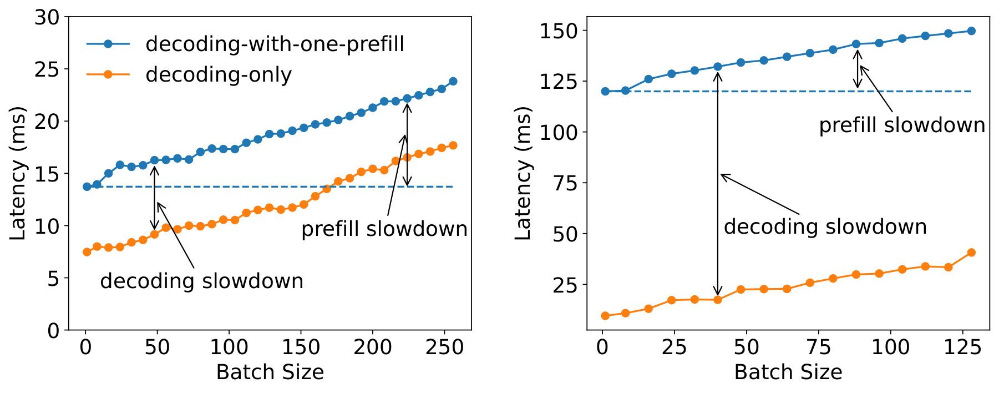
（a） 输入长度 = 128 （b） 输入长度 = 1024prefill解码干扰。 如图2 所示，在一批解码请求中添加单一prefill任务会显著减慢两个进程，导致TTFT和TPOT显著增加。具体来说，batch中的解码任务必须等待更长的prefill作业完成，从而延长TPOT;随着prefill时间变长，减速会加剧，如图2（b）所示。在prefill中添加解码作业也会增加完成prefill任务的时间，尤其是在GPU已满载时（见图2 蓝色曲线）。
一种缓解这种干扰的尝试称为 带搭载的分块prefill。它提议将长prefill拆分成多个块，并batch 处理一个prefill块，进行少量解码任务（即搭便车）。该技术缓解了因prefill时间较长导致的解码减慢，但并不能完全消除该问题。此外，这还会导致prefill工作额外的开销，而这些开销无法通过调整块大小来轻松缓解。首先，如果块大小远低于能饱和GPU的拐点，那么prefill作业的执行时间会更长，因为它会与同一批解码作业竞争，无法单独利用GPU资源。其次，如果我们把分块大小增加到几乎饱和GPU，搭便车的可能性会降低，因为剩余的解码token槽位有限。此外，分块prefill会显著增加prefill作业的内存访问量。这是因为所有之前分块的KV cache必须反复从HBM加载到SRAM，以计算后续的每个分块。具体来说，如果prefill作业被拆分成 \(N\) 相等的块，我们总共需要加载 \(N + (N-1) + ... + 1 = O(N^2)\) 块KV cache，而非分块情况下则是O（N）。随着上下文长度的延长，这种开销会增加。
无效的排班。 解码prefill、解码作业并按顺序调度并不能减少干扰。解码作业可能会因等待GPU上的持续prefill作业而出现更长的排队延迟。此外，专门用于解码的batch常常导致GPU利用率不足。在任一阶段优先排序任务都会不利于另一阶段的延迟，使优先调度失效。
资源耦合与并行耦合。 在同一GPU上共址prefill和解码相位不可避免地共享资源和并行设置。然而，每个相都有其独特的计算特性和延迟要求，需要更异构的资源分配。例如，prefill阶段通常受计算限制，且通过更多的运内并行性来缩短执行时间，以满足TTFT上的严格SLO要求。相比之下，decode 阶段的最优并行配置取决于运行batch大小。在现有系统中，由于耦合，资源分配和并行性计划会针对TTFT和TPOT中 要求更高的 方案进行定制，这两者可能并不理想。这常常导致资源过度配置以满足两个SLO的要求。
机会。 为解决这些问题，我们提议将prefill和decode 阶段拆分。我们 使用实例一 词来表示管理一个完整模型权重副本的资源单位。当应用模型并行时，一个实例可以对应多个GPU。注意，当我们将两阶段拆分到不同的GPU时，每个阶段管理其模型权重的副本，从而产生 prefill实例 和 decode 实例。prefill实例在收到请求时，仅对该请求进行prefill计算，以生成第一个输出token。然后它将中间结果（主要是KV cache）发送到decode 实例，该实例负责后续的解码步骤。由于解码计算通常占用GPU较低，我们可能会为每个decode 实例分配多个prefill实例。这允许batch 处理更多解码作业，以实现更高的GPU利用率。
拆分prefill和解码自然解决了两相之间的干扰，使每个阶段都能专注于其优化目标——TTFT或TPOT。每种实例类型都可以采用不同的资源和并行策略，以满足不同的延迟需求。通过调整GPU数量和提供给这两种实例的并行性，我们可以最大化整个系统的每设备goodput，避免过度配置，最终转化为符合服务质量的每次查询成本的降低。接下来，我们开发方法，找出每个阶段最佳的资源分配和并行计划。
3 权衡分析
拆分将两个阶段解耦，允许对每个阶段的特性进行独立分析，为算法设计提供宝贵见解。它还扩展了设计空间：现在每个阶段都需要根据其延迟需求独立扩展和调度。
本节分析了分解后prefill（§3.1）和decode 实例（§3.2）的计算模式。我们旨在确定关键参数，并制定各阶段batch和并行处理的指导方针。随后，我们重点介绍了若干实际部署的考虑因素（§3.3）。本节为每GPU的善价投资优化奠定了基础。
3.1 prefill实例分析
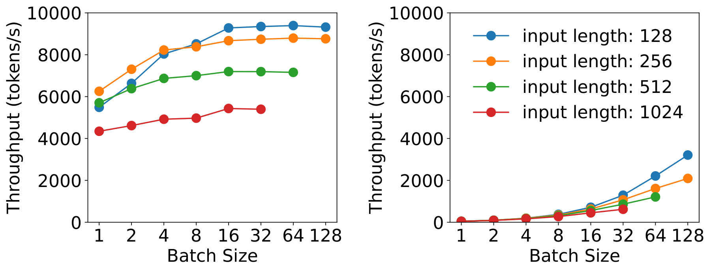
（a） prefill阶段 （b） decode 阶段拆分后，prefill阶段通过并行处理用户prompt的所有token生成第一个token。假设给定的到达率，我们旨在用最少的资源满足TTFT上的服务延迟要求。
batch 处理策略。 prefill步骤通常计算量较大。图3（a） 展示了prefill阶段吞吐量随输入长度和batch大小的变化。对于一个13B参数的LLM，处理一个包含512个token的序列即可完全激活A100 GPU。一旦GPU变得对计算受限，增加更多请求就不再能提升GPU效率。相反，它会按比例延长batch的总处理时间，无意中延迟所有包含的请求。因此，对于prefill实例，需要提前分析特定的LLM和GPU配置，以确定一个关键输入长度阈值，记为 \(L_m\)，超过此阈值后prefill阶段将被计算限制。只有当调度请求的输入长度低于 \(L_m\)时，才应考虑batch 处理更多请求。实际上，用户prompt通常平均分布在数百个token上。prefill实例的batch尺寸通常保持较小。
并行计划。 为了研究仅prefill实例的并行性偏好，我们在两台A100 GPU上提供一个66B的大语言模型，采用运内或运内并行策略。为了简化问题，我们假设请求的输入长度为512个token，并且存在泊松到达过程。我们比较图4（a）中不同到达率下所得的平均TTFT：运内并行在较低到达率下更高效，而运内并行性随着速率增加获得优越性。拆分使prefill阶段类似于M/D/1队列，因此我们可以利用排队理论验证观察结果。
我们首先采用无并行的单设备情形开发符号：每个请求的执行时间（记为 \(D\)）由于prefill长度均匀，保持不变。由于一个请求会让GPU过饱和，我们采用先到先得（FCFS）方式安排请求，无需batch 处理。假设泊松到达率为 \(R\) ，利用条件为 \(RD < 1\)，平均TTFT（\(Avg\_TTFT\)）可由M/D/1队列以近形式建模： \[ \small Avg\_TTFT = D + \frac{RD^2}{2(1-RD)}. \] ，其中第一项代表执行时间，第二项对应排队延迟。基于方程[eq1]，我们在下方加入了并行性。
在双向操作间并行中，我们假设请求级延迟会变 \(D_s\)，最慢的阶段需要 \(D_m\) 才能完成。由于几乎无关紧要的层间激活通信，我们有 \(D \approx D_s \approx 2 \times D_m\)。具有两路操作间并行性的平均TTFT可推导如下：
\[ \small Avg\_TTFT_{inter} = D_s + \frac{RD_m^2}{2(1-RD_m)} = D + \frac{RD^2}{4(2-RD)}. \]
对于运内并行性，我们引入了一个加速系数 \(K\)，其中 \(1 < K < 2\)，反映了运内并行性高通信开销导致的不完美加速。执行时间 \(D_s = \frac{D}{K}\)度运内并行的平均TTFT为：
\[ \small Avg\_TTFT_{intra} = \frac{D}{K} + \frac{RD^2}{2K(K-RD)}. \]
比较方程[eq2] 和方程[eq3]：在较低速率下，执行时间（第一项）为主要因素，运内并行性减少执行时间使其更高效。随着速率增加且排队延迟（第二项）变得更显著，运算间并行性变得有利，这一点与图4（a）一致。
prefill阶段对并行性的偏好也受到TTFT、SLO和加速系数 \(K\)的影响。从图4（a）看：更严格的SLO将使运内并行性更具优势，因为它能够缩短执行时间。K 的值取决于输入长度、模型架构、通信带宽和位置等因素。如图4（b）所示，K的减少显著降低了操作内并行的有效性。§4 开发了优化资源和并行配置的算法，考虑这些旋钮。
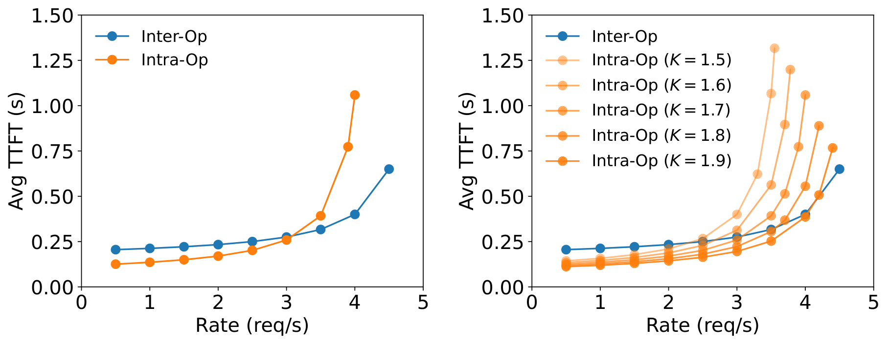
（a） 真实实验结果 （b） 改变术中加速3.2 实例解码分析
与prefill实例不同，decode 实例遵循独特的计算模式：它接收prefill实例的KV cache和第一个输出token，然后逐个生成后续token。对于decode 实例，我们的优化目标是以最小的计算资源满足应用的TPOT要求。
batch 处理策略。 由于单个解码作业带宽受限较大，batch是避免低GPU利用率（因此每GPUgoodput高）的关键，如图3（b）所示。在prefill和decode 阶段共址的现有系统中，增加解码batch规模较为困难，因为这与满足延迟目标冲突，尤其是在请求率较高的场景中。这是因为共享GPU会导致prefill和解码作业之间的竞争，导致TTFT和TPOT之间的权衡。例如，更高的到达率会产生更多prefill任务，如果优先处理prefill任务，需要更多GPU时间来满足TTFT要求，这反过来对TPOT产生不利影响。
相反，拆分通过允许将多个prefill实例分配到单一decode 实例，提供了解决方案。这种方法允许在专用GPU上累积更大的batch以完成decode 阶段，同时不牺牲TPOT。
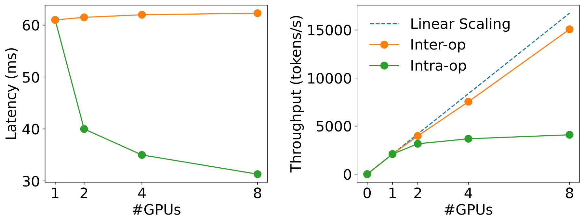
并行计划。 拆分后，解码的batch大小可能受GPU内存容量限制，因为必须维护所有活跃请求的KV cache。通过模型并行扩展decode 实例，或利用LLM KV cache的高级内存管理技术，如PagedAttention（Paged-Attention）和GQA，可以进一步扩展解码batch大小，接近计算限制。随着解码batch规模持续增加，接近计算限制，解码计算开始类似于prefill阶段。基于这一观察，我们研究图5中大批量条件下不同并行度下的延迟和吞吐量变化：运内并行性降低延迟，但收益递减，原因是通信和分区后利用率降低。运用间并行几乎可以线性地扩展吞吐量。因此，当TPOT的SLO要求严格时，运内并行性对于降低TPOT以达到延迟目标至关重要。此外，更倾向于采用运偶间并行性，以线性提升吞吐量。
值得注意的是，当模型能够容纳于单个GPU内存时，复制是一种竞争性选项，此外还包括prefill和decode 实例的模型并行，以线性扩展系统速率容量。它也可能通过用\(R\)替换为\(R/N\)来减少排队延迟——如方程[eq1]所示，假设请求均等分发到\(N\)副本，但代价是维护GPU内存中模型权重的额外副本。
3.3 实际问题
我们制定了针对每个阶段选择batch和并行的基础原则。本节讨论并解决了在拆分prefill和decode 阶段实际部署过程中遇到的若干挑战。
可变prefill长度。 §3 假设各请求的prompt长度统一。在实际部署中，根据LLM应用的不同，请求长度是不统一的。这种不统一性可能导致prefill实例出现流水线气泡，因为不同长度请求间的流水线阶段执行时间会有所不同。这导致与使用M/D/1队列模型所显示的结论略有偏差。为解决这个问题，第4 节开发了基于工作负载搜索并行性的算法，并采用调度以最小化气泡（第4.3节）。
沟通负担。 将 KV 缓存从prefill转移到decode 实例会产生显著开销。例如，OPT-66B上单个512token请求的KV cache大小约为1.13GB。假设平均到达率为10 rps，我们需要传输每秒11.3GB的数据——相当于90Gbps带宽，才能使开销变得无形。虽然许多现代LLMGPU集群配备了InfiniBand（例如800 Gbps），但在跨节点带宽有限的情况下，DistServe依赖常见的节点内NVLINK，其中A100 GPU之间的峰值带宽为600 GB/s，同样使传输开销可以忽略不计（见§6.3）。然而，这一要求对prefill和decode 实例的放置施加了额外限制，我们将在下一节中加以考虑。
通过本节的分析，我们识别了工作负载模式、布局约束、SLO要求、并行性策略和资源分配，这些参数构成了设计拆分服务系统时的多重考量网络。如何自动导航搜索空间以找到实现每GPU最优商品配置的挑战，接下来将重点讨论。
4 方法
我们创建DistServe是为了解决上述挑战。根据模型、工作负载特性、延迟需求和SLO达成目标，DistServe将确定（a）prefill和decode 实例的并行策略，（b）每种实例类型的部署数量，以及（c）如何将它们部署到物理集群。我们称之为 “安置”。我们的目标是找到一个最大化每显卡好评的布局。
如第3.3节所述，一个关键的设计考虑是管理分散prefill和decode 阶段之间的通信，前提是集群设置不同。本节首先介绍两种布置算法：一种用于拥有高速跨节点网络的集群（§4.1），另一种适用于缺乏此类基础设施的环境（§4.2）;后者引入了额外的约束。随后，我们开发了适应现实工作量细微差别的在线调度优化（§4.3）。
4.1 高带宽节点亲和性集群的布置
LLM\(G\)、#node 限制每实例\(N\)、#GPU 每节点\(M\)、GPU内存\(C\)、工作负载\(W\)、流量\(R\)。\(\mathit{best\_plm}.\) \(\mathit{config_p}, \mathit{config_d} \leftarrow \emptyset, \emptyset\) \(\mathit{config} \leftarrow (\mathit{inter\_op}, \mathit{intra\_op})\) \(\hat{G} \leftarrow \text{parallel}(G, \mathit{config})\) \(\mathit{config.goodput} \leftarrow \text{simu\_prefill}(\hat{G}, W)\) \(\mathit{config_p} \leftarrow \mathit{config}\) \(\mathit{config.goodput} \leftarrow \text{simu\_decode}(\hat{G}, W)\) \(n, m \leftarrow \lceil \frac{R}{\mathit{config_p.goodput}} \rceil, \lceil \frac{R}{\mathit{config_d.goodput}} \rceil\) \(\mathit{config_d} \leftarrow \mathit{config}\) 返回\(\mathit{best\_plm}\) \(\mathit{best\_plm} \leftarrow (n, \mathit{config_p}, m, \mathit{config_d})\)
在配备Infiniband的高带宽节点亲和性集群上，KV cache跨节点的传输开销可忽略不计，DistServe可以在任意两个节点之间部署prefill和decode 实例，且无任何限制。我们为此类场景提出了一个两级布局算法：首先分别优化prefill和decode 实例的并行配置，以实现相位级最优的每GPU良好输入;然后，我们使用复制来匹配整体流量率。
然而，由于缺乏简单的分析公式来计算SLO达成（即满足TTFT要求的请求百分比），由于工作负载输入、输出长度和到达模式不规则，找到最优并行配置仍然具有挑战性。通过真实测试平台画像来衡量SLO非常耗时。因此，我们不得不构建一个模拟器来估算SLO达成，前提是先验了解工作负载的到达过程以及输入和输出长度分布。虽然短期间隔无法预测，但较长时间尺度（如小时或天）的工作量模式通常是可预测的。DistServe从历史请求痕迹中拟合分布，并重新采样该分布的新痕迹作为输入负载，向模拟器计算SLO实现。接下来，DistServe简单地枚举了这些位置，并通过二分搜索和模拟试验找到达到SLO达成目标的最大速率。
算法[alg：optimal-placement] 概述了整个过程。我们枚举了所有可行的并行配置，均受集群容量限制，适用于prefill和decode 实例。然后，对于特定的prefill相位配置，我们用来 simu_prefill 模拟并通过二分搜索找到其最大有效输入（类似 simu_decode 用于解码）。在确定prefill和decode 实例的最佳并行配置后，我们会复制它们，以实现用户根据其goodput所需的整体流量率。
算法[alg：optimal-placement]的复杂度\(O(NM^2)\)为每个实例的节点\(N\)数限制，\(M\)代表现代集群中每节点典型的GPU数量（例如8个）。搜索空间可控，在我们最大设置下，解决时间不到1.3分钟，如第6.5节所示。
模拟器制作。算法[alg：optimal-placement]依赖模拟器在不同SLO和SLO目标下，根据工作负载和并行计划估计goodput。为了构建一个准确的模拟器，我们分别分析了prefill和decode 阶段的FLOP和内存访问次数，并使用延迟模型近似推理执行时间。详情见附录10。由于DNN工作负载具有高度可预测性，该模拟器与真实剖析结果高度契合，详见第6.4节验证。
迄今为止，我们已经开发了算法[alg：optimal-placement] ，假设我们可以将prefill和decode 实例放置在集群的任意两个节点之间（或同一节点），并且KV cache传输利用高带宽网络。在许多真实集群中，节点内的GPU可以访问高带宽的NVLINK，而分布在各节点的GPU带宽有限。接下来，我们开发一个算法来解决这一限制。
LLM\(G\)、#node 限制每实例\(N\)、#GPU 每节点\(M\)、GPU内存\(C\)、工作负载\(W\)、流量\(R\)。\(\mathit{best\_plm}.\) \(\mathit{config}^{*} \leftarrow \emptyset\) \(\mathcal{P} \leftarrow \text{get\_intra\_node\_configs}(G, M, C, \mathit{inter\_op})\) \(\mathit{config} \leftarrow (\mathit{inter\_op}, P_p, P_d)\) \(\hat{G}_p, \hat{G}_d \leftarrow \text{parallel}(G, \mathit{config})\) \(\mathit{config.goodput} \leftarrow \text{simulate}(\hat{G}_p, \hat{G}_d, W)\) \(\mathit{config^{*}} \leftarrow \mathit{config}\)
\(n \leftarrow \lceil \frac{R}{\mathit{config.^{*}goodput}} \rceil\) \(\mathit{best\_plm} \leftarrow (n, \mathit{config^{*}})\)
返回\(\mathit{best\_plm}\)
4.2 低带宽节点亲和性集群的安置
一个简单的解决方案是始终在同一节点上共址prefill和decode 实例，利用 NVLINK，这通常存在于 GPU 节点内。对于大型模型，例如参数为175B（350GB），我们甚至无法在8-GPU节点（\(80G \times 8 = 640G < 350 \times 2 GB\)）中托管一对prefill和decode 实例。我们将此作为额外的放置约束纳入，并与模型并行协同优化，该方法见算法[算法：低亲和性放置]。
关键见解是，KV cache传输仅发生在相应的prefill和decode 实例层之间。利用操作间并行性，我们将层分组为多个阶段，并将每个实例划分为称为 实例段的段，每个段保持一个特定的操作间阶段。通过在同一节点内共置prefill和解码同一阶段的段，我们强制中间状态的传输仅通过NVLINK进行。在节点内部，我们为同一实例的段设置相同的并行性和资源分配。鉴于每个节点通常有8个GPU的典型限制，我们可以在一个节点内枚举可能的配置，并利用模拟器识别出产生最佳良好配置的配置。
如算法[alg：low-affinity-placement]中所述，我们首先枚举操作间并行度，以获得所有可能的实例段。对于每个段，我们通过调用 get_intra_node_configs得到所有可能的节点内并行配置。然后我们用仿真找到最优方案，并复制它以满足目标流量率。
4.3 在线调度
DistServe 的运行时架构如图 6 所示。DistServe采用简单的FCFS调度策略。所有入站请求都到达一个集中式控制器，然后调度到队列最短的prefill实例进行prefill处理，再派遣到负载最小的decode 实例进行解码步骤。这种设置虽然简单，但通过多项关键增强优化，针对现实工作负载的细微差别量身定制。
减少流水线气泡。为了缓解因prompt长度不均引起的流水线气泡（§3.3），我们以平衡管道中所有batch执行时间的方式调度请求。这是通过注意，对于prefill和decode 实例，batch中新token数量是batch实际执行时间的可靠指标来实现的。对于prefill实例，我们分析目标模型和GPU来确定最短的prompt时长\(L_m\)以使GPU充满。我们通过batch 处理多个短于\(L_m\)的请求，或单独调度超过\(L_m\)的请求，来安排总序列长度接近\(L_m\)的prefillbatch。对于decode 实例，我们设置\(L_m\)为最大batch size。
战斗力。 工作负载的突发性可能导致大量 KV 缓存从prefill转移到decode 实例，从而增加decode 实例内存过载的风险。为规避此问题，DistServe采用“拉取”方法传输KV cache，而非“推送”方式——实例解码 时根据需要从prefill实例获取KV cache，使用prefill实例的GPU内存作为排队缓冲区。这样，prefill实例可以通过在处理prompt后将KV cache保留在GPU内存中，继续处理其他prefill任务。因此，每种实例都能以自己的节奏运行，无需复杂的协调。
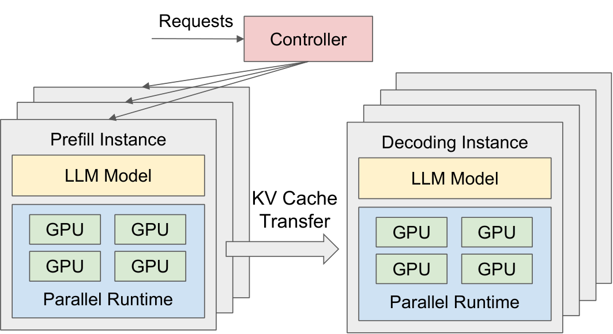
重新规划。 DistServe中的资源和并行度计划针对特定工作负载模式进行了优化，如果工作负载模式随时间变化，该模式可能会变得次优。DistServe定期实施重新规划。工作负载分析器监控关键参数，如请求的平均输入和输出长度、平均到达率等。如果检测到显著的模式偏移，DistServe将根据近期历史数据触发重运行位置算法。这一过程非常快捷——所提算法只需几秒钟（§6.5），且加载LLM权重可在几分钟内完成——远短于实际工作量变化的小时规模。
抢占和容错。DistServe不实现高级运行时策略，如抢占和容错，这些策略是与拆分的补充。尽管如此，我们讨论了它们如何融入DistServe。在DistServe中，FCFS策略可能导致“车队效应”，即在prefill阶段阻挡较短请求。如现有文献建议的，采用先发制人策略，可以提升效率，并且在我们的系统架构中是可行的。虽然当前DistServe并非主要关注点，但容错性是一个关键考虑因素。在传统的基于共置和复制的系统中，一个实例的故障通常不会干扰其他副本实例。然而，在 DistServe 中，prefill与decode 实例之间的依赖性带来了故障传播的风险。例如，单个decode 实例映射到多个prefill实例中的故障，可能会使整个服务和集群瘫痪。我们把两者都留作未来的作品。
5 实现
DistServe 是一个面向大语言模型的端到端分布式服务系统，包含布局算法模块、RESTful API 前端、编排层和并行执行引擎。算法模块、前端和编排层均由6.500行Python代码实现。并行执行引擎由8.1K行C++/CUDA代码实现。
定位算法模块实现了§4 中提到的算法和模拟器，给出特定模型和簇设置的布局决策。前端支持兼容 OpenAI API 的接口，客户端可以指定采样参数，如最大输出长度和温度。编排层管理prefill和decode 实例，负责请求调度、KV cache传输和结果传递。它采用 NCCL 进行跨节点 GPU 通信，异步 CudaMemcpy 进行节点间通信，避免在传输过程中阻塞 GPU 计算。每个实例由并行执行引擎驱动，该引擎使用Ray演员实现GPUworker，执行LLM推理并以分布式方式管理KV cache。它集成了许多近期的大语言模型优化，如continuous batching、FlashAttention、PagedAttention，并支持流行的开源大语言模型如OPT和LLaMA。
6 实验评估
本节中，我们将评估DistServe在不同规模的LLMs（从13B到175B）以及包括聊天机器人、代码完成和摘要等多种应用数据集下的应用。评估显示，DistServe在所有设置下始终优于当前最先进的系统（§6.2）。具体来说，DistServe可以处理高达 \(7.4\times\) 更高的速率 \(12.6\times\) 和更严格的SLO，同时满足超过90%请求的延迟要求。此外，我们分析了DistServe中的延迟分解，证明由于我们的带宽感知布局算法（§6.3），通信开销微乎其微，并对我们的技术进行了消融研究（§6.4）。最后，我们分析了放置算法的执行时间（§6.5）。
| 应用 | 模型尺寸 | TTFT | TPOT | 数据集 |
|---|---|---|---|---|
| 聊天机器人 OPT-13B | 26GB | 0.25s | 0.1s | ShareGPT |
| 聊天机器人 OPT-66B | 132GB | 2.5s | 0.15s | ShareGPT |
| 聊天机器人 OPT-175B | 350GB | 4.0s | 0.2s | ShareGPT |
| 代码补全 OPT-66B | 132GB | 0.125s | 0.2s | 人类评估 |
| 总结 OPT-66B | 132GB | 15s | 0.15s | 长凳 |
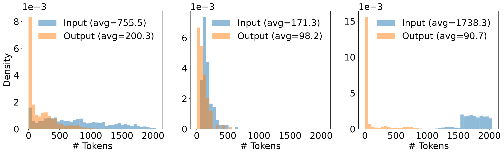
（a） ShareGPT （b） HumanEval （c） LongBench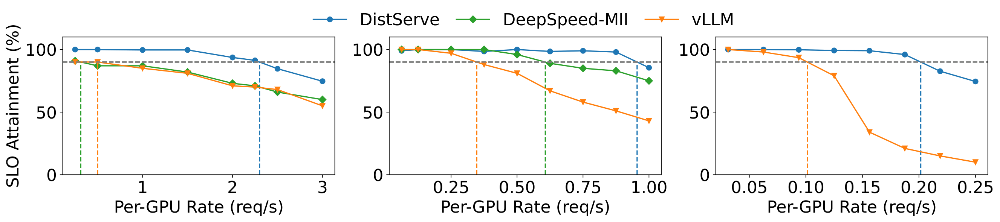
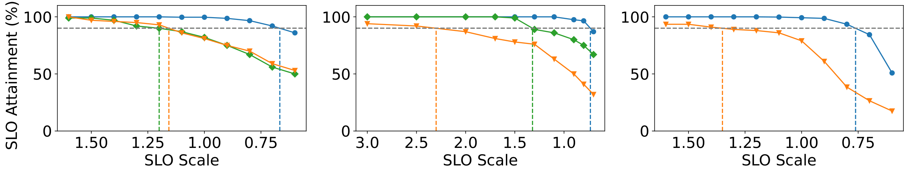
（A） OPT13B （b） OPT66B （C） OPT-175B6.1 实验设置
集群测试场。我们将DistServe部署在一个拥有4个节点和32个GPU的集群上。每个节点配备8块NVIDIA SXM A100-80GB GPU通过NVLINK连接。跨节点带宽为25Gbps。由于跨节点带宽有限，除了消融研究（§6.4）外，大多数实验中我们使用低带宽节点亲和性放置算法（§[算法：低亲和性放置]）。
模型和工作负载设置。 与之前关于LLM服务的工作类似，我们选择了OPT模型系列，这是一个在学术界和工业界广泛使用的代表性LLM家族。更新的GPT模型家族正在采用像GQA和MQA这样高效内存的注意力机制。由于KV cache容量减少，传输开销更低，DistServe在这些型号上表现会更好。我们选择了OPT，它使用经典的MHA系统来对变速箱的开销施加足够的压力。我们在所有实验中都采用FP16的精度。对于工作负载，如表1所示，我们选择了三种典型的LLM应用，并根据其服务目标实证地设置SLO，因为据我们所知，这些应用目前尚无可用的SLO设置。对于每个应用，我们选择合适的数据集并从中抽样请求进行评估。由于所有数据集都不包含时间戳，我们使用泊松分布生成请求到达时间，且请求率不同。由于空间限制，我们在所有三个OPT模型上测试聊天机器人工作负载，另外两个工作负载在OPT-66B上测试，该模型规模符合近期开源LLM系列中的最大规模。
聊天机器人：我们使用 ShareGPT 数据集开发聊天机器人应用，该数据集是用户与 ChatGPT 共享的对话集合。对于OPT-13B，TTFT的SLO设置为0.25秒以提升响应速度，TPOT的SLO设置为0.1秒，这比正常的人类读取速度还要快。对于OPT-66B和OPT-175B，由于模型执行延迟增加，我们对两个SLO进行了略微放松。
代码补全：我们使用 HumanEval 数据集进行代码补全任务。它包含164个带有函数签名或docstring的编程问题，用于评估代码完成模型的性能。由于代码补全模型被用作个人实时编码助手，我们将两个SLO都设置为严格。
摘要：为一篇长文、论文甚至学术论文生成简明的摘要是一项流行的大语言模型任务。我们使用包含总结任务4的LongBench数据集。如图7所示，LongBench的输入长度远长于另外两个数据集。所以我们设定了一个宽松的TTFT SLO，但要求严格的TPOT。
指标。 我们以 SLO 达成率 作为主要评估指标。在特定的SLO实现目标（比如90%）下，我们关注两点：每GPU的最大善置和系统能承受的最小SLO。我们特别关注SLO达到90%的实现（所有曲线图中的垂直线表示），但也会调整速率和延迟要求，以观察SLO实现的变化。我们还将 SLO 达到 99% 的成绩纳入附录，以展示在更严格 SLO 目标下的系统表现。
基线。 我们将DistServe与两个基线系统进行比较：
vLLM： vLLM是一种代表性的LLM服务系统，广泛应用于学术界和工业界。它支持 continuous batching以提高吞吐量，并支持分 页注意力以减少KV cache分配时的内存碎片。然而，它将prefill和解码计算共置，以最大化整体系统吞吐量，且难以以成本效益满足延迟要求。由于vLLM仅支持运内并行，我们沿用之前的工作，将三个OPT模型的运内分别设为1、4和8。
DeepSpeed-MII： DeepSpeed 推理模型实现（MII）支持分 块prefill ，通过将长prompt分解成更小的块，再用短prompt编写，精确填满目标token预算。它减少了由于prefill时间较长造成的prefill-解码干扰，但无法消除。我们把手术中OPT-13B和OPT-66B的手术中设置成与vLLM相同的标准，以便公平对比。然而，DeepSpeed-MII无法为其 \(vocab\_size=50272\) 175B提供服务，因为其底层内核实现要求 \(vocab\_size/intra\_op\) 为8的倍数，且操作内等于8不满足。将操作内设置为4可以满足此要求，但会导致内存不足的问题。
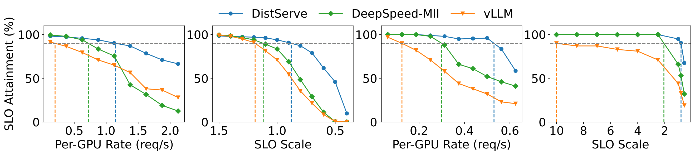
（a） 代码补全 （b） 摘要6.2 端到端实验
本节将DistServe的端到端性能与真实应用数据集的基线进行比较。
聊天机器人。 我们评估了DistServe在聊天机器人应用中对三种OPT模型的性能。图8 的第一行说明，当我们逐步提高速率时，更多请求会违反延迟要求，SLO实现率下降。竖线显示系统为满足超过 90% 请求延迟要求所能处理的最大每 GPU 速率。
在 ShareGPT 数据集上，DistServe 的请求率比 vLLM 高出 \(2.0\times\) \(4.6\times\) 。这是因为DistLLM通过拆分消除了prefill-解码的干扰。两个阶段可以通过分配不同资源和采用定制化的并行策略来优化各自的目标。具体来说，通过分析175B的选择置放策略5 ，我们发现prefill实例的互操作性=3，操作内=3;decode 实例间操作间 = 3，运内 = 4。在此配置下，DistServe能够有效平衡ShareGPT两个实例之间的负载，以最低成本满足延迟要求。这种非平凡的放置策略难以手动找到，证明了算法的有效性。在vLLM中，prefill和解码的同源会大幅减缓decode 阶段，从而显著增加TPOT。由于聊天机器人应用对TPOT的要求非常严格，尽管vLLM在大多数请求中符合TTFT SLO标准，但整体SLO的达成因大量违反TPOT SLO的请求而被拖累。与 DeepSpeed-MII 相比，DistServe 能够维持更高的请求率 \(1.6\times\) \(7.4\times\) 。DeepSpeed-MII在较大型号上表现更好，因为prefill工作更大，分块prefill在一定程度上减轻了干扰。然而，由于第2.3节讨论的原因，分块prefill速度比完全prefill慢，因此作为更好的TPOT的牺牲，难以满足TTFT的SLO要求。
图8的第二行显示了两系统对不断变化的延迟需求的鲁棒性。我们固定速率，然后使用称为SLO尺度的参数同时线性扩展表1中的两种延迟要求。随着SLO规模的降低，延迟要求也更加严格。我们的目标是遵循系统能够承受的最严格SLO量表，同时实现达成目标。图8显示，DistServe能够实现比vLLM更严格\(1.8\times\)–\(3.2\times\)的SLO，比DeepSpeed-MII更严格\(1.7\times\)–\(1.8\times\)，从而为用户提供更具吸引力的服务质量。
代码完成。 图9（a） 显示了DistServe在提供OPT-66B时代码完成任务的表现。DistServe能够承受 \(5.7\times\) 更高的请求率，并且 \(1.4\times\) 比vLLM更严格的SLO。与DeepSpeed-MII相比，DistServe能够维持 \(1.6\times\) 更高的请求率和更严格的SLO \(1.4\times\) 。作为实时编码助手，代码完成任务所需的TTFT低于聊天机器人，这导致两者最终都受限于TTFT的要求。然而，相比之下，通过消除解码作业的干扰，并通过搜索算法自动增加prefill实例的操作内并行性，DistServe降低了prefill任务的平均延迟，从而满足TTFT对更多请求的需求。
总结。 图9（b） 展示了DistServe在提供OPT-66B时的总结任务表现。DistServe实现了 \(4.3\times\) 更高的请求率和 \(12.6\times\) 更严格的SLO标准。与DeepSpeed-MII相比，DistServe实现了 \(1.8\times\) 更高的请求率和更严格的SLO \(2.6\times\) 。从 LongBench 数据集中抽样的请求输入长度较长，这给prefill计算带来了显著压力。然而，由于总结任务对TTFT的要求较宽松，TPOT的服务质量变得尤为重要。由于vLLM将prefill和decode 阶段同源，因此在decode 阶段经历较大的减速，prefill工作较长，无法满足TPOT要求。
上述结果均低于90%的SLO达成目标。我们观察到，DistServe在更严格的达成目标（比如99%）下表现更好，并将结果呈现于附录12。
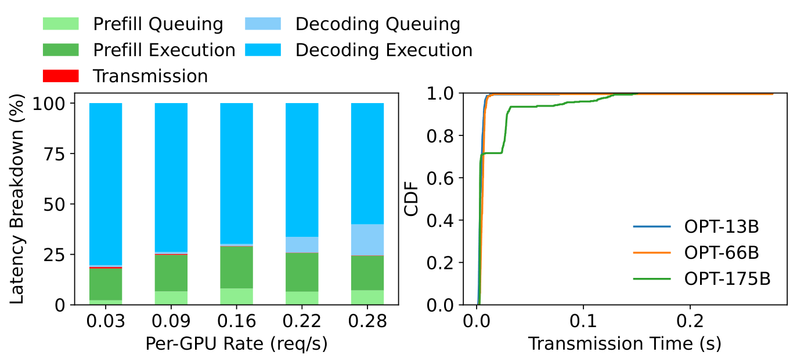
6.3 延迟分解
为了详细理解 DistServe 的性能，我们对 DistServe 中的请求进行了延迟分解。我们将 DistServe 中请求的处理生命周期分为五个阶段： prefill队列、 prefill执行、 传输、 解码队列和 解码执行。然后将每个阶段所有请求所耗总时间相加，确定它们在系统总执行时间中的比例。
图10（a） 展示了ShareGPT数据集上OPT-175B模型的延迟分布。我们选择OPT-175B是因为KV cache传输对大型机型的要求更高。事实上，即使是OPT-175B，KV cache传输也仅占总延迟的不到0.1%。即使通过查看图10（b）所示绝对传输时间的CDF，我们也发现超过95%的请求延迟低于30毫秒，尽管我们的测试平台跨节点带宽有限。这是由于§4.2中描述的算法，我们要求prefill和decode 实例在同一台机器上保持同一阶段，从而允许使用节点内NVLINK带宽进行传输，从而显著降低传输延迟。
|
vLLM | 迪斯特塞尔夫-洛 | ||||
|---|---|---|---|---|---|---|
| 2-3 | 真实系统 | 模拟器 | 真实系统 | 模拟器 | ||
| 1.0 | 97.0% | 96.8% | 100.0% | 100.0% | ||
| 1.5 | 65.5% | 65.1% | 100.0% | 100.0% | ||
| 2.0 | 52.8% | 51.0% | 99.3% | 99.3% | ||
| 2.5 | 44.9% | 46.1% | 87.3% | 88.3% | ||
| 3.0 | 36.7% | 38.3% | 83.0% | 84.1% | ||
| 3.5 | 27.8% | 28.0% | 77.3% | 77.0% | ||
| 4.0 | 23.6% | 24.1% | 70.0% | 68.9% | ||
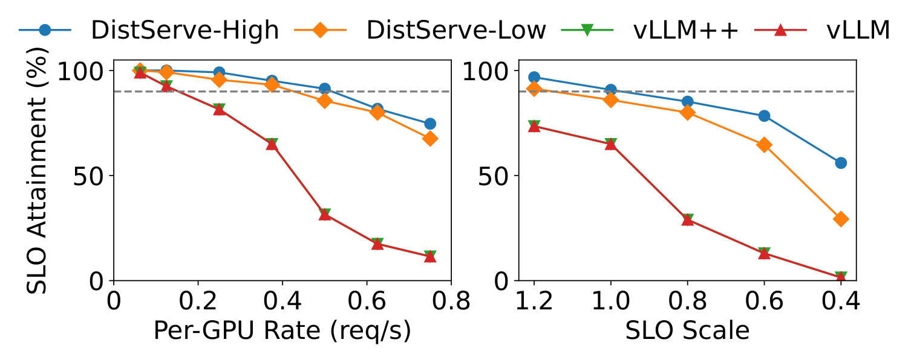
6.4 消融研究
我们研究了DistServe中两项关键创新：拆分和位置搜索算法的有效性。在§6.2中，我们根据vLLM的原始论文选择默认的并行设置。因此我们实现了“vLLM++”，它枚举了不同的并行策略并选择了最佳方案。对于 DistServe，我们还比较了 Alg. [alg：low-affinity-placement] （DistServe-Low）所找到的布局与 Alg. [alg：optimal-placement] （DistServe-High）找到的，后者搜索约束较少且假设跨节点带宽较高。由于vLLM不支持操作间并行性，且我们的物理测试平台跨节点带宽不高，我们使用模拟进行实验。
模拟器精度。 注意到DNN模型的执行即使在并行设置下也具有高度可预测性。我们在第3页研究模拟器的准确性。对于“vLLM”和“DistServe-Low”，我们比较了模拟器和测试平台实际运行在不同速率下的SLO达成。所有情况下误差均小于2%，验证了我们模拟器的准确性。
结果。 图11 展示了这四个系统在ShareGPT数据集上提供OPT-66B时的性能。“vLLM++”的性能与“vLLM”相同，因为我们发现默认并行设置（intra-oper=4）在每个GPU的良好配置中是最好的。这进一步说明了拆分的重要性。prefill阶段与decode 阶段之间的干扰显著降低了通过调整并行性带来的性能提升。相比之下，“DistLLM-High”可以比“DistLLM-Low”实现更多改进，因为它不受部署限制，即同一节点上的prefill和decode 实例必须共享同一模型阶段。通过拆分，我们可以采用定制化的并行策略进行prefill和decode 实例，并在不产生耦合效应的情况下优化其目标。
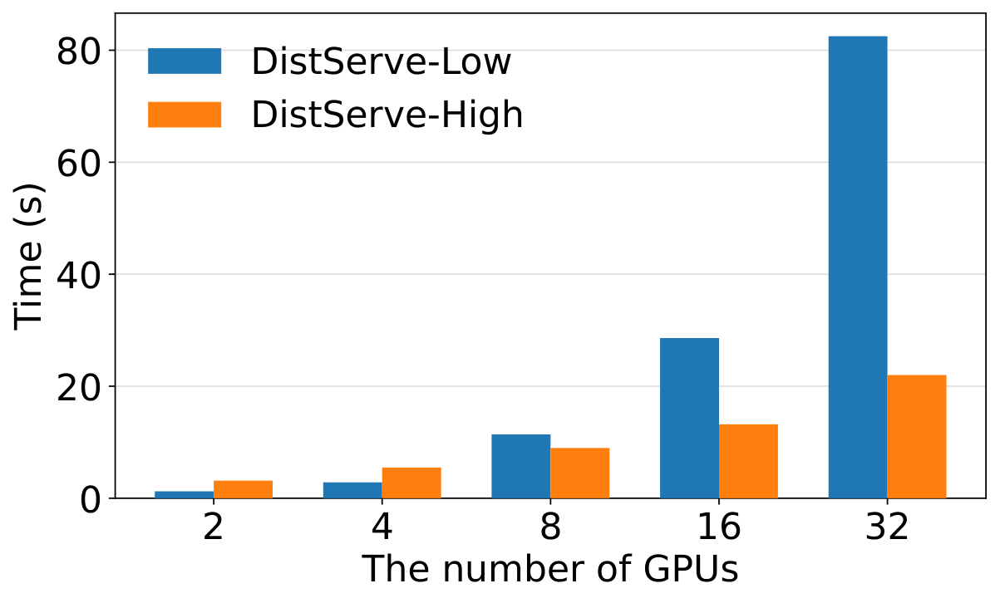
6.5 算法运行时间
图12显示了在拥有96核的AWS m5d.metal实例上，随着单个实例提供GPU数量（\(N \times M\)）增加，算法[算法：最优位置]（DistServe-Low）和算法[低亲和性配置]（DistServe-High）的运行时间。结果显示，DistServe的扩展性随GPU数量增加而良好，且不受型号大小影响。这是因为模拟器只模拟离散事件，无论模型多大，运行时间都是相同的。另一方面，这两种算法高度可并行化，因为不同并行策略的搜索彼此独立，使得算法的执行时间随着CPU核心数量增加几乎线性加速。
随着GPU数量的增加，“Dist-Low”的执行时间会比“Dist-High”更长。这是因为在“Dist-High”中，prefill和decode 实例的并行策略搜索是独立的，并且可以并行化。但对于“Dist-Low”，由于部署上的额外限制，我们需要枚举所有可能的节点内并行组合，用于prefill和decode 实例。即便如此，算法的执行时间以几分钟为单位，且每次重新部署前只需执行一次，这种开销是可以接受的。
7 讨论
本文重点关注goodput优化的环境，并在大规模LLM服务场景下提出DistServe。由于大语言模型被广泛应用并部署在各种服务场景中，具有不同的优化目标和资源限制，几乎不可能找到一个适用于所有人、有效解决LLM服务各个方面的解决方案。在本节中，我们将讨论DistServe的优缺点以及其他场景下可能更好的解决方案。
吞吐量优化的场景。在非延迟敏感的离线应用中，用户通常对响应时间的要求较低。这使得服务系统能够将重点从善产转向最大化整体吞吐量，从而降低DistServe的有效性。在这种情况下，可能更倾向于采用分块prefill和搭载，因为它可以将每批填充到计算限制阈值，从而在每次迭代中保持更高的GPU利用率。
资源有限的情景。 小型企业和个人研究人员往往缺乏资源在大型集群上部署大语言模型。在资源有限的场景中，比如只有几个甚至单个GPU的环境，DistServe的设计空间非常有限。它在调整并行策略和资源分配方面遇到困难，甚至失败，以有效提升服务表现。在这种情况下，更简单的架构选择如非拆分系统可能降低部署复杂性并优化运营效率。
长上下文场景。 如今，越来越多的GPT模型支持极长的上下文，如Claude-3、Gemini-1.5和大型世界模型（LWM），它们都拥有100万上下文窗口。在这种情况下，随着KV cache大小随prompt长度线性增长，传输开销会增加。然而，prefill计算呈平方增长，因此传输和prefill工作的相对持续时间会缩短。与此同时，更长的背景进一步加剧了prefill和解码作业之间计算需求的差异，导致它们之间的干扰增加。因此，DistServe提出的拆分方法在长上下文服务中依然具有前景。
8 相关工作
推理服务。最近关于推理服务的研究非常多。它们涵盖了从通用生产级系统如TorchServe和NVIDIA Triton，到专门针对基于Transformer的大语言模型优化的系统。其中，Orca引入了continuous batching以提高吞吐量。vLLM 提出了PagedAttention（paged-attention）用于细粒度的 KV 缓存管理。SARATHI建议采用分块prefill方法，将prefill请求拆分为多个块，并搭载解码请求以提升硬件利用率。FastServe实现迭代级抢占式调度，以减轻长时间作业引起的排队延迟。然而，它们都采用共置方法进行prefill和解码处理，因此导致严重干扰。同时也有如Splitwise、TetriInfer和DéjàVu等研究采用类似的拆分理念来优化LLM推断，进一步验证了该方法的有效性。不同地，DistServe更强调goodput优化场景，并更深入地考察了网络带宽的方面。
Goodput优化系统。 优化善产是DL应用中的热门话题。Pollux通过动态调整作业资源，提升群组范围内的goodput，从而提升DL集群的调度性能。Sia引入了一种异构感知调度方法，能够高效地将集群资源匹配到弹性资源适应作业。Clockwork和Shepherd提供带延迟的调度和抢占功能以提升服务质量，但它们只针对传统的小型模型。AlpaServe专注于LLM，利用模型并行对GPU执行进行统计复用，从而提升资源利用率。然而，它只针对非自回归的一代。DistServe是首个优化自回归大语言模型推断的goodput的工作。
资源拆分。 资源拆分系统将硬件资源从传统的单体服务器基础设施中解耦，并将它们分离到资源池中，以便独立管理。它允许更灵活、高效且可扩展的部署，并提高资源利用率。许多应用受益于真正分散的数据中心，拥有高速网络带宽和异构硬件支持。DistServe通过拆分系统组件，实现独立的资源扩展和管理，共享这一概念。
用于训练的并行模型。DistServe与大量关于训练中模型并行的研究是正交的。如第3.3节所述，推理服务工作负载具有训练环境中不存在的独特特征。这些系统与DistServe的交叉点在于其实现模型并行的方法。DistServe可以将新的并行优化集成到其位置搜索算法中。
9 结论
我们介绍DistServe，一种新的大语言模型服务架构，能够拆解prefill和解码的计算。DistServe最大化每个GPU的goodput——即每个 GPU在遵守SLO达成目标下可提供的最大请求速率，从而实现每LLM查询成本降低多 \(7.4\times\) ，同时保证SLO的满足。我们的研究结果表明，随着延迟成为LLM服务日益重要的指标，prefill和解码拆分是承诺提升性能和服务质量保证的重要策略。
致谢。我们衷心感谢我们的牧师和匿名评审者的宝贵反馈。该工作得到了中国国家自然科学基金62172008、62325201和国家优秀青年科学家基金项目（海外）资助。陈俊达获得UCSD奖学金支持，张浩则由UCSD教师创业基金支持。欣晋是通讯作者。钟银敏、刘璇哲和欣晋也隶属于教育部北京大学高信心软件技术重点实验室。
10 LLM 推理的延迟模型
为了准确模拟不同放置策略的goodput 损失，我们使用分析模型预测LLM推断中prefill和decode 阶段的执行时间。
在现代LLM服务系统中，像Softmax和LayerNorm这样的内存受限操作通常与矩阵乘法核融合以提高效率。因此，GEMMs主导了整体延迟，我们的分析主要聚焦于它们。
10.1 符号定义
以下是与模型架构相关的符号：
\(h\)：隐藏尺寸
\(n\)：正面数
\(s\)：头部大小（\(h = n \cdot s\)）
\(m\)：FFN中等规模
注意：如果使用张量平行度，应除以张量平行大小， \(h\)、 \(n\)和 \(m\) 。
以下是描述待执行batch的符号：
\(B\)：batch规模
\(l_0, l_1, \dots, l_{B-1}\)：batch中每个请求的输入长度
\(t\)：batch中的token数量，（\(t = \sum_{i=0}^{B-1} l_i\)）
\(t_2\)：输入长度的平方和（\(t_2 = \sum_{i=0}^{B-1} l_i^2\)）
\(b\)：注意力内核中的块大小。该参数被用于FlashAttention，这是一种被当前大语言模型服务系统采用的常见内核优化技术。
10.2 prefill相延迟建模
由于注意操作使用了特别优化的核，我们首先讨论prefill阶段的另外四个矩阵乘法：
| GEMM 名称 | \(M\)形状 | \(N\)形状 |
|---|---|---|
| QKV 线性 | \((t, h)\) | \((h, 3h)\) |
| 关注输出 | \((t, h)\) | \((h, h)\) |
| FFN输入 | \((t, h)\) | \((h, m)\) |
| FFN输出 | \((t, m)\) | \((m, h)\) |
这些操作的算术强度（AI）是 \(O(t)\)的。在NVIDIA A100-80GB显卡上，当AI超过156GB时，它会被计算限制。由于 \(t\) 在真实情况下通常可达数百个操作，所有这些操作都受计算限制。因此，我们可以根据总浮点数来建模这些操作的延迟：
\[T_1 = C_1 \cdot (4th^2 + 2thm)\]
接下来，我们讨论FlashAttention优化中的prefill注意力操作。由于注意力只在同一请求中的token之间工作，当前实现会为同一batch中的每个请求启动注意力内核。对于一个注意力头和一个\(l\)token的请求，注意力内核需要执行总共\(2sl + 3sl\cdot(l/b) \approx 3sl\cdot(l/b)\)次内存读写，同时进行\(2sl^2 + sl(l/b) \approx 2sl^2\)次浮点操作。因此，AI在\(b=16\)时是\(2b/3 = 10.677\)时是\(21.333\)，表明它是\(b=32\)A100 GPU上的内存受限操作。因此，整个注意力层延迟（包括所有请求和所有头）可以建模为：
\[T_2 = C_2 \cdot n \cdot \sum_{i=0}^{B-1} \frac{3sl_i^2}{b} = C_2 \cdot \frac{3nst_2}{b} = C_2 \cdot \frac{3ht_2}{b}\]
总体而言，prefill阶段的延迟可建模为：
\[T_{Prefill} = C_1 \cdot (4th^2 + 2thm) + C_2 \cdot \frac{3ht_2}{b} + C_3\]
我们用 \(C_3\) 来量化其他开销，比如Python运行时、系统噪声等。然后我们利用剖析和插值来计算 \(C_1\)、 \(C_2\)和 \(C_3\)的数值。
10.3 相位延迟建模解码
同样，我们首先关注decode 阶段的以下GEMMs：
| GEMM 名称 | \(M\)形状 | \(N\)形状 |
|---|---|---|
| QKV 线性 | \((B, h)\) | \((h, 3h)\) |
| 关注输出 | \((B, h)\) | \((h, h)\) |
| FFN输入 | \((B, h)\) | \((h, m)\) |
| FFN输出 | \((B, m)\) | \((m, h)\) |
这些行动的人工智能是 \(O(B)\)的。 \(B\) 受限于GPU内存容量和严格的延迟要求，因此在现有的服务场景中，这些操作是受内存限制的。总内存读写次数 \(8Bh + 4h^2 + 2hm + 2Bm\)，由于 \(h\) 和 \(m\) 通常远大于 \(B\)，我们可以将延迟建模为：
\[T_3 = C_4 \cdot (4h^2 + 2hm)\]
至于解码注意力操作，对于一个注意力头和一个生成 \(l\) token的请求，需要执行 \(3sl\) 的内存读写，同时进行 \(2sl\) 次浮点操作。它是内存受限的，因此我们可以用以下方式来建模解码注意力的延迟：
\[T_4 = C_5 \cdot n \cdot 3s \sum_{i=0}^{B-1} l_i = C_5 \cdot 3ht\]
总结来说，解码相位的延迟为：
\[T_{Decoding} = C_4 \cdot (4h^2 + 2hm) + C_5 \cdot 3ht\]
这里我们不引入开销项（如剖析阶段的 \(C_3\) ），因为 \(4h^2 + 2hm\) 已经是常数，开销可以被计入 \(C_4\)。同样，我们利用剖析和插值来确定 \(C_4\) 和 \(C_5\)的值。
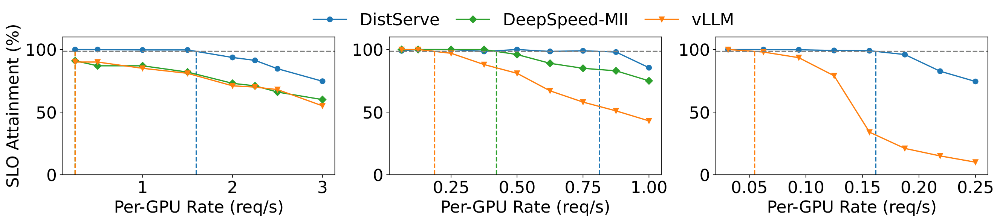
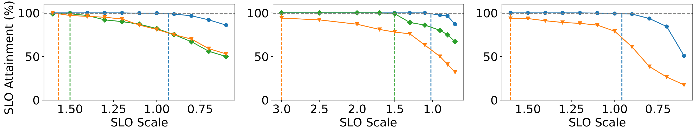
（A） OPT13B （b） OPT66B （C） OPT-175B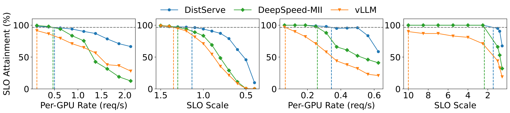
（a） 代码补全 （b） 摘要11 DistServe在端到端实验中的安置
表4 展示了DistServe在端到端实验§6.2中选择的prefill和decode 实例的张量并行（TP）和流水线并行（PP）配置。
| 模型 | 数据集 | 预补 | 解码 | ||
|---|---|---|---|---|---|
| 3-6 | TP | PP | TP | PP | |
| OPT-13B | ShareGPT | 2 | 1 | 1 | 1 |
| OPT-66B | ShareGPT | 4 | 1 | 2 | 2 |
| OPT-66B | 长凳 | 4 | 1 | 2 | 2 |
| OPT-66B | 人类评估 | 4 | 1 | 2 | 2 |
| OPT-175B | ShareGPT | 3 | 3 | 4 | 3 |
12 99%SLO 达成率下的端到端结果
图13和图14展示了DistServe与在相同设置下基线之间的端到端表现，仅SLO达成目标改为99%。我们可以看到，在更严格的SLO达成目标下，相较于vLLM，DistServe仍能维持\(3\times\)–\(8\times\)更高的速率和\(1.24\times\)–\(6.67\times\)更严格的SLO。与DeepSpeed-MII相比，DistServe能够实现\(1.32\times\)\(8\times\)更高的速率和\(1.20\times\)–\(1.58\times\)更严格的SLO。
参考文献
Introducing chatgpt. https://openai.com/blog/chatgpt, 2022.
Bard, an experiment by google. https://bard.google.com/, 2023.
Deepspeed model implementations for inference (mii), 2023.
Inflection tech memo. https://inflection.ai/assets/Inflection-1.pdf, 2023.
Lanchain usecase: Summarization, 2023.
Nvidia collective communications library (nccl), 2023.
Serve, optimize and scale pytorch models in production, 2023.
Sharegpt teams. https://sharegpt.com/, 2023.
Amey Agrawal, Ashish Panwar, Jayashree Mohan, Nipun Kwatra, Bhargav S Gulavani, and Ramachandran Ramjee. Sarathi: Efficient llm inference by piggybacking decodes with chunked prefills. , 2023.
Joshua Ainslie, James Lee-Thorp, Michiel de Jong, Yury Zemlyanskiy, Federico Lebrón, and Sumit Sanghai. Gqa: Training generalized multi-query transformer models from multi-head checkpoints, 2023.
Anthropic. Introducing the next generation of claude. https://www.anthropic.com/news/claude-3-family, 2024.
Andrew Audibert, Yang Chen, Dan Graur, Ana Klimovic, Jiri Simsa, and Chandramohan A. Thekkath. A case for disaggregation of ml data processing, 2022.
Yushi Bai, Xin Lv, Jiajie Zhang, Hongchang Lyu, Jiankai Tang, Zhidian Huang, Zhengxiao Du, Xiao Liu, Aohan Zeng, Lei Hou, Yuxiao Dong, Jie Tang, and Juanzi Li. Longbench: A bilingual, multitask benchmark for long context understanding, 2023.
Mark Chen, Jerry Tworek, Heewoo Jun, Qiming Yuan, Henrique Ponde de Oliveira Pinto, Jared Kaplan, Harri Edwards, Yuri Burda, Nicholas Joseph, Greg Brockman, Alex Ray, Raul Puri, Gretchen Krueger, Michael Petrov, Heidy Khlaaf, Girish Sastry, Pamela Mishkin, Brooke Chan, Scott Gray, Nick Ryder, Mikhail Pavlov, Alethea Power, Lukasz Kaiser, Mohammad Bavarian, Clemens Winter, Philippe Tillet, Felipe Petroski Such, Dave Cummings, Matthias Plappert, Fotios Chantzis, Elizabeth Barnes, Ariel Herbert-Voss, William Hebgen Guss, Alex Nichol, Alex Paino, Nikolas Tezak, Jie Tang, Igor Babuschkin, Suchir Balaji, Shantanu Jain, William Saunders, Christopher Hesse, Andrew N. Carr, Jan Leike, Josh Achiam, Vedant Misra, Evan Morikawa, Alec Radford, Matthew Knight, Miles Brundage, Mira Murati, Katie Mayer, Peter Welinder, Bob McGrew, Dario Amodei, Sam McCandlish, Ilya Sutskever, and Wojciech Zaremba. Evaluating large language models trained on code. .
Mark Chen, Jerry Tworek, Heewoo Jun, Qiming Yuan, Henrique Ponde de Oliveira Pinto, Jared Kaplan, Harri Edwards, Yuri Burda, Nicholas Joseph, Greg Brockman, et al. Evaluating large language models trained on code. , 2021.
Wei-Lin Chiang, Zhuohan Li, Zi Lin, Ying Sheng, Zhanghao Wu, Hao Zhang, Lianmin Zheng, Siyuan Zhuang, Yonghao Zhuang, Joseph E. Gonzalez, Ion Stoica, and Eric P. Xing. Vicuna: An open-source chatbot impressing gpt-4 with 90%* chatgpt quality, 2023.
Compute Express Link Consortium. Compute express link, 2023. Accessed: 2023-12-07.
NVIDIA Corporation. Fastertransformer, 2019.
NVIDIA Corporation. Triton inference server: An optimized cloud and edge inferencing solution., 2019.
Tri Dao, Daniel Y. Fu, Stefano Ermon, Atri Rudra, and Christopher Ré. Flashattention: Fast and memory-efficient exact attention with io-awareness, 2022.
Jiarui Fang, Yang Yu, Chengduo Zhao, and Jie Zhou. Turbotransformers: an efficient gpu serving system for transformer models. In ACM PPoPP, 2021.
Google. Our next-generation model: Gemini 1.5. https://deepmind.google/technologies/gemini/, 2024.
Arpan Gujarati, Reza Karimi, Safya Alzayat, Wei Hao, Antoine Kaufmann, Ymir Vigfusson, and Jonathan Mace. Serving DNNs like clockwork: Performance predictability from the bottom up. In 14th USENIX Symposium on Operating Systems Design and Implementation (OSDI 20), pages 443–462. USENIX Association, November 2020.
Arpan Gujarati, Reza Karimi, Safya Alzayat, Wei Hao, Antoine Kaufmann, Ymir Vigfusson, and Jonathan Mace. Serving DNNs like clockwork: Performance predictability from the bottom up. In USENIX OSDI, 2020.
Zhiyuan Guo, Zijian He, and Yiying Zhang. Mira: A program-behavior-guided far memory system. In Proceedings of the 29th Symposium on Operating Systems Principles, SOSP ’23, page 692–708, New York, NY, USA, 2023. Association for Computing Machinery.
Mingcong Han, Hanze Zhang, Rong Chen, and Haibo Chen. Microsecond-scale preemption for concurrent GPU-accelerated DNN inferences. In 16th USENIX Symposium on Operating Systems Design and Implementation (OSDI 22), pages 539–558, Carlsbad, CA, July 2022. USENIX Association.
Cunchen Hu, Heyang Huang, Liangliang Xu, Xusheng Chen, Jiang Xu, Shuang Chen, Hao Feng, Chenxi Wang, Sa Wang, Yungang Bao, Ninghui Sun, and Yizhou Shan. Inference without interference: Disaggregate llm inference for mixed downstream workloads, 2024.
Yanping Huang, Youlong Cheng, Ankur Bapna, Orhan Firat, Mia Xu Chen, Dehao Chen, HyoukJoong Lee, Jiquan Ngiam, Quoc V. Le, Yonghui Wu, and Zhifeng Chen. Gpipe: Efficient training of giant neural networks using pipeline parallelism, 2019.
Suhas Jayaram Subramanya, Daiyaan Arfeen, Shouxu Lin, Aurick Qiao, Zhihao Jia, and Gregory R Ganger. Sia: Heterogeneity-aware, goodput-optimized ml-cluster scheduling. In Proceedings of the 29th Symposium on Operating Systems Principles, pages 642–657, 2023.
Xin Jin, Zhihao Bai, Zhen Zhang, Yibo Zhu, Yinmin Zhong, and Xuanzhe Liu. Distmind: Efficient resource disaggregation for deep learning workloads. , pages 1–16, 2024.
Woosuk Kwon, Zhuohan Li, Siyuan Zhuang, Ying Sheng, Lianmin Zheng, Cody Hao Yu, Joseph E. Gonzalez, Hao Zhang, and Ion Stoica. Efficient memory management for large language model serving with pagedattention. In Proceedings of the ACM SIGOPS 29th Symposium on Operating Systems Principles, 2023.
Woosuk Kwon, Zhuohan Li, Siyuan Zhuang, Ying Sheng, Lianmin Zheng, Cody Hao Yu, Joseph E. Gonzalez, Hao Zhang, and Ion Stoica. Efficient memory management for large language model serving with pagedattention, 2023.
Zhuohan Li, Lianmin Zheng, Yinmin Zhong, Vincent Liu, Ying Sheng, Xin Jin, Yanping Huang, Zhifeng Chen, Hao Zhang, Joseph E Gonzalez, et al. Alpaserve: Statistical multiplexing with model parallelism for deep learning serving. , 2023.
Hao Liu, Wilson Yan, Matei Zaharia, and Pieter Abbeel. World model on million-length video and language with ringattention. , 2024.
Philipp Moritz, Robert Nishihara, Stephanie Wang, Alexey Tumanov, Richard Liaw, Eric Liang, Melih Elibol, Zongheng Yang, William Paul, Michael I. Jordan, and Ion Stoica. Ray: A distributed framework for emerging AI applications. In USENIX OSDI, 2018.
Deepak Narayanan, Aaron Harlap, Amar Phanishayee, Vivek Seshadri, Nikhil R. Devanur, Gregory R. Ganger, Phillip B. Gibbons, and Matei Zaharia. Pipedream: Generalized pipeline parallelism for dnn training. In ACM SOSP, 2019.
OpenAI. Gpt-4 technical report, 2023.
Pratyush Patel, Esha Choukse, Chaojie Zhang, Íñigo Goiri, Aashaka Shah, Saeed Maleki, and Ricardo Bianchini. Splitwise: Efficient generative llm inference using phase splitting, 2023.
Aurick Qiao, Sang Keun Choe, Suhas Jayaram Subramanya, Willie Neiswanger, Qirong Ho, Hao Zhang, Gregory R. Ganger, and Eric P. Xing. Pollux: Co-adaptive cluster scheduling for goodput-optimized deep learning. In 15th USENIX Symposium on Operating Systems Design and Implementation (OSDI 21), pages 1–18. USENIX Association, July 2021.
Samyam Rajbhandari, Jeff Rasley, Olatunji Ruwase, and Yuxiong He. Zero: Memory optimizations toward training trillion parameter models, 2020.
Reuters, 2023.
Baptiste Roziere, Jonas Gehring, Fabian Gloeckle, Sten Sootla, Itai Gat, Xiaoqing Ellen Tan, Yossi Adi, Jingyu Liu, Tal Remez, Jérémy Rapin, et al. Code llama: Open foundation models for code. , 2023.
Yizhou Shan, Yutong Huang, Yilun Chen, and Yiying Zhang. \(\{\)LegoOS\(\}\): A disseminated, distributed \(\{\)OS\(\}\) for hardware resource disaggregation. In 13th USENIX Symposium on Operating Systems Design and Implementation (OSDI 18), pages 69–87, 2018.
Noam Shazeer. Fast transformer decoding: One write-head is all you need, 2019.
Ying Sheng, Lianmin Zheng, Binhang Yuan, Zhuohan Li, Max Ryabinin, Daniel Y. Fu, Zhiqiang Xie, Beidi Chen, Clark Barrett, Joseph E. Gonzalez, Percy Liang, Christopher Ré, Ion Stoica, and Ce Zhang. Flexgen: High-throughput generative inference of large language models with a single gpu, 2023.
Mohammad Shoeybi, Mostofa Patwary, Raul Puri, Patrick LeGresley, Jared Casper, and Bryan Catanzaro. Megatron-lm: Training multi-billion parameter language models using model parallelism, 2020.
John F Shortle, James M Thompson, Donald Gross, and Carl M Harris. , volume 399. John Wiley & Sons, 2018.
Yixin Song, Zeyu Mi, Haotong Xie, and Haibo Chen. Powerinfer: Fast large language model serving with a consumer-grade gpu, 2023.
Foteini Strati, Sara Mcallister, Amar Phanishayee, Jakub Tarnawski, and Ana Klimovic. Déjàvu: Kv-cache streaming for fast, fault-tolerant generative llm serving, 2024.
Yiming Su, Chengcheng Wan, Utsav Sethi, Shan Lu, Madan Musuvathi, and Suman Nath. Hotgpt: How to make software documentation more useful with a large language model? In Proceedings of the 19th Workshop on Hot Topics in Operating Systems, pages 87–93, 2023.
Hugo Touvron, Thibaut Lavril, Gautier Izacard, Xavier Martinet, Marie-Anne Lachaux, Timothée Lacroix, Baptiste Rozière, Naman Goyal, Eric Hambro, Faisal Azhar, Aurelien Rodriguez, Armand Joulin, Edouard Grave, and Guillaume Lample. Llama: Open and efficient foundation language models, 2023.
Ashish Vaswani, Noam Shazeer, Niki Parmar, Jakob Uszkoreit, Llion Jones, Aidan N Gomez, Łukasz Kaiser, and Illia Polosukhin. Attention is all you need. , 2017.
Bingyang Wu, Yinmin Zhong, Zili Zhang, Gang Huang, Xuanzhe Liu, and Xin Jin. Fast distributed inference serving for large language models. , 2023.
Gyeong-In Yu, Joo Seong Jeong, Geon-Woo Kim, Soojeong Kim, and Byung-Gon Chun. Orca: A distributed serving system for \(\{\)Transformer-Based\(\}\) generative models. In USENIX OSDI, 2022.
Hong Zhang, Yupeng Tang, Anurag Khandelwal, and Ion Stoica. Shepherd: Serving dnns in the wild. .
Susan Zhang, Stephen Roller, Naman Goyal, Mikel Artetxe, Moya Chen, Shuohui Chen, Christopher Dewan, Mona Diab, Xian Li, Xi Victoria Lin, Todor Mihaylov, Myle Ott, Sam Shleifer, Kurt Shuster, Daniel Simig, Punit Singh Koura, Anjali Sridhar, Tianlu Wang, and Luke Zettlemoyer. Opt: Open pre-trained transformer language models, 2022.
Yiying Zhang. Make it real: An end-to-end implementation of a physically disaggregated data center. , 57(1):1–9, jun 2023.
Kai Zhao, Sheng Di, Sihuan Li, Xin Liang, Yujia Zhai, Jieyang Chen, Kaiming Ouyang, Franck Cappello, and Zizhong Chen. Ft-cnn: Algorithm-based fault tolerance for convolutional neural networks. , 32(7):1677–1689, 2021.
Lianmin Zheng, Zhuohan Li, Hao Zhang, Yonghao Zhuang, Zhifeng Chen, Yanping Huang, Yida Wang, Yuanzhong Xu, Danyang Zhuo, Eric P. Xing, Joseph E. Gonzalez, and Ion Stoica. Alpa: Automating inter- and Intra-Operator parallelism for distributed deep learning. In USENIX OSDI, 2022.
Zhe Zhou, Xuechao Wei, Jiejing Zhang, and Guangyu Sun. \(\{\)PetS\(\}\): A unified framework for \(\{\)Parameter-Efficient\(\}\) transformers serving. In USENIX ATC, 2022.